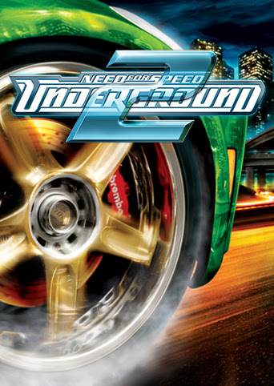

Всі ігри серії Need for Speed базуються на одних і тих же фундаментальних правилах і мають схожу механікою - гравець управляє гоночним автомобілем, беручи участь в різних заїздах, мета яких - перемога. У режимі турнір / кар'єра гравець повинен виграти серію гонок, щоб розблокувати транспортні засоби, траси та інше. Перед кожним заїздом гравець вибирає автомобіль і КПП (автоматичну або ручну). Всі ігри серії мають вбудований розрахований на багато користувачів режим, який дозволяє змагатися один з одним через розділений екран, локальну мережу або Інтернет.

Хоча всі ігри відносяться до однієї серії, їх тон і спрямованість відрізняються в тій чи іншій формі. Наприклад, в деяких іграх автомобілі можуть отримувати механічні або візуальні ушкодження, а в інших машини неразрушаеми. В одних є реалістична фізика, в інших модель поведінки автомобіля спрощена. Need for Speed: Shift і його продовження акцентує принцип гоночного симулятора. У цих іграх гонки проходять по замкнутому колу на реальних - Нюрбургрінг, Лагуна Сека, а також вигаданих вуличних трасах в Лондоні і Чикаго.
Need for Speed - найуспішніша гоночна серія комп'ютерних ігор в світі і одна з найуспішніших ігрових медіафраншиза за всю історію. Станом на жовтень 2009 року було продано понад 140 мільйонів копій ігор серії
У червні 2012 року було оголошено, що Criterion Games повністю контролює медіафраншиза Need for Speed після реструктуризації EA Black Box. У серпні 2013 року розробники Ghost Games, а також Criterion Games об'єднали свої сили на доступну для огляду перспективу. Однак в листопаді цього ж року стало відомо, що Need for Speed переходить під контроль EA Sports. Також стало відомо, що Electronic Arts уклала багаторічна партнерську угоду з гонщиком Кеном Блоком, який буде консультантом гонок медіафраншиза.